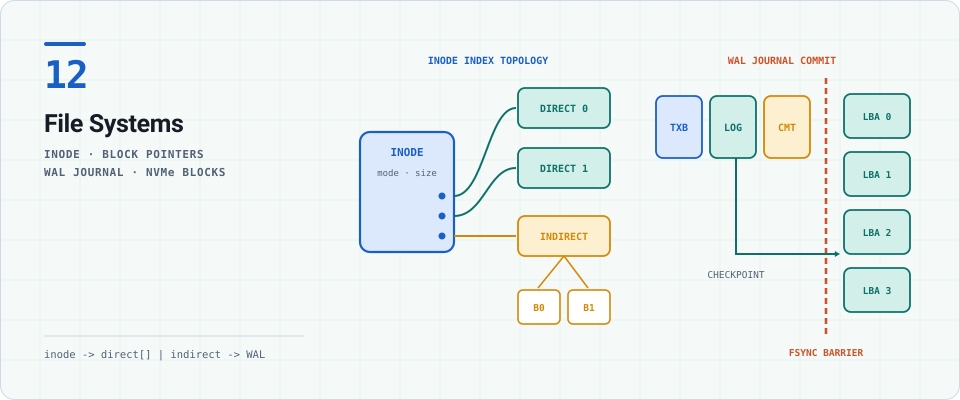
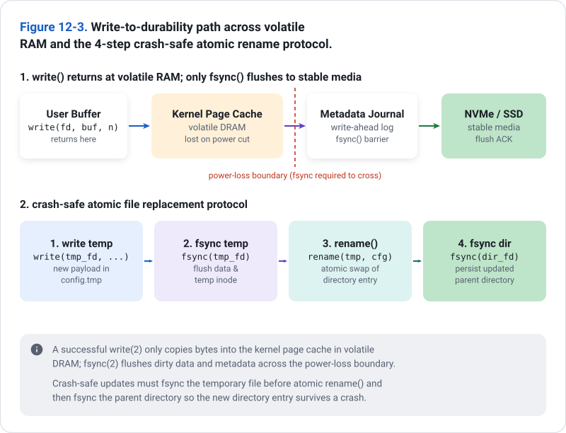

12. File System Architecture and Durability

A file system provides a persistent, named abstraction for data stored on a block device. It organizes storage into structured entities, files and directories, and manages the mapping between human-readable hierarchical paths and physical disk blocks while surviving power loss and abrupt system crashes.
12.1 The File Descriptor and the Open File Description
The kernel mediates every file operation through three distinct layers of indirection:
- Per-Process File Descriptor Table: Maps a small non-negative integer (
fd, such as3) inside the process’s Process Control Block (PCB) to a pointer in the system-wide open file table, along with per-descriptor flags such asFD_CLOEXEC. - System-Wide Open File Description: A kernel object created by each call to
open()that stores the current byte offset, access mode (O_RDONLY,O_WRONLY,O_RDWR), status flags (O_APPEND,O_NONBLOCK), a reference count, and a pointer to the target inode. - In-Memory Inode (
vnode/struct inode): Represents the underlying file itself (size, permissions, timestamps, link count, and physical block map), shared across all processes opening that file.
This three-level design explains why descriptors duplicated via dup() / dup2() or inherited across fork() point to the same open file description and therefore share a single synchronized byte offset, whereas two independent calls to open() on the same pathname allocate separate open file descriptions with independent offsets referencing the same underlying inode.
12.1.1 The POSIX File System Call Interface (open, lseek, fstat, ftruncate, fsync, unlink)
Listings 12-1 through 12-4 exercise the core Portable Operating System Interface (POSIX) file-manipulation system calls:
int open(const char *pathname, int flags, mode_t mode);
off_t lseek(int fd, off_t offset, int whence);
int fstat(int fd, struct stat *statbuf);
int ftruncate(int fd, off_t length);
int fsync(int fd);
int unlink(const char *pathname);
Calling open(pathname, flags, mode) opens or creates a file and returns the lowest unused file descriptor (>= 0), or -1 on error (ENOENT, EACCES, EEXIST, EMFILE). The flags bitmask combines an access mode (O_RDWR) with creation and state flags (O_CREAT creates a missing file; O_TRUNC resets an existing regular file to zero bytes). When O_CREAT creates a file, the octal mode (such as 0644: owner rw-, group r--, other r--) is masked against the process’s umask (mode & ~umask). Repositioning the open file description’s byte offset without transferring data is performed by lseek(fd, offset, whence), where whence selects the reference origin: SEEK_SET (from byte 0), SEEK_CUR (relative to the current cursor), or SEEK_END (relative to end-of-file). Seeking past end-of-file is legal in POSIX and allocates zero storage until a subsequent write() creates a sparse hole.
To inspect authoritative inode metadata, fstat(fd, statbuf) populates struct stat (returning 0 on success or -1 on EBADF / EFAULT): st_ino holds the unique inode number, st_size records the logical byte length (including sparse holes), st_blocks reports actual allocated physical storage in 512-byte units regardless of the filesystem’s native 4 KiB block size (st_blocks * 512 bytes), st_blksize indicates the preferred Input/Output (I/O) transfer size, and st_mode / st_nlink record file type, permission bits, and hard-link count. Resizing a file’s logical length (st_size) is performed by ftruncate(fd, length), which discards trailing blocks when shrinking or creates a zero-reading sparse extension when growing.
Durability and reclamation rely on fsync(fd) and unlink(pathname). Invoking fsync(fd) flushes all modified data pages and inode metadata associated with fd from the kernel’s volatile page cache down to stable non-volatile storage, blocking until the storage controller acknowledges completion. Calling unlink(pathname) removes the directory entry naming pathname and decrements st_nlink; the kernel reclaims the inode and its data blocks only when both st_nlink == 0 and zero open file descriptions reference the inode, allowing an already-open file to remain readable and writable even after being unlinked.
Listing 12-1. open, write, lseek, read, and stat (C++20).
// ch12/files.cpp: open, write, seek, read, stat: the syscall layer of a file system.
#include <fcntl.h>
#include <sys/stat.h>
#include <unistd.h>
#include <cstdio>
#include <cstring>
int main() {
const char* path = "/tmp/osbook_files.txt";
int fd = open(path, O_CREAT | O_RDWR | O_TRUNC, 0644);
if (fd < 0) {
perror("open");
return 1;
}
const char* line = "operating systems\n"; // 18 bytes
write(fd, line, strlen(line));
write(fd, line, strlen(line));
// The file offset is a per-open-description cursor.
printf("offset after two writes: %lld\n",
static_cast<long long>(lseek(fd, 0, SEEK_CUR)));
lseek(fd, 0, SEEK_SET);
char buf[64] = {};
ssize_t n = read(fd, buf, sizeof buf - 1);
printf("read back %zd bytes:\n%s", n, buf);
struct stat st {};
fstat(fd, &st);
printf("inode %llu, size %lld bytes, %lld blocks\n",
static_cast<unsigned long long>(st.st_ino),
static_cast<long long>(st.st_size),
static_cast<long long>(st.st_blocks));
fsync(fd);
close(fd);
unlink(path);
}
Output 12-1. A file of 36 bytes and its metadata.
offset after two writes: 36
read back 36 bytes:
operating systems
operating systems
inode 11420117, size 36 bytes, 8 blocks
Listing 12-2. The same operations with the Rust standard library.
// ch12/files.rs: the same file operations through the Rust standard library.
use std::fs::OpenOptions;
use std::io::{Read, Seek, SeekFrom, Write};
use std::os::unix::fs::MetadataExt;
fn main() -> std::io::Result<()> {
let path = "/tmp/osbook_files_rs.txt";
let mut f = OpenOptions::new()
.create(true)
.read(true)
.write(true)
.truncate(true)
.open(path)?;
let line = b"operating systems\n"; // 18 bytes
f.write_all(line)?;
f.write_all(line)?;
// The file offset is a per-open-description cursor.
println!("offset after two writes: {}", f.stream_position()?);
f.seek(SeekFrom::Start(0))?;
let mut buf = [0u8; 64];
let n = f.read(&mut buf)?;
println!(
"read back {n} bytes:\n{}",
String::from_utf8_lossy(&buf[..n])
);
let meta = f.metadata()?;
println!(
"inode {}, size {} bytes, {} blocks",
meta.ino(),
meta.len(),
meta.blocks()
);
f.sync_all()?;
drop(f);
std::fs::remove_file(path)?;
Ok(())
}Output 12-2.
offset after two writes: 36
read back 36 bytes:
operating systems
operating systems
inode 11420119, size 36 bytes, 8 blocks
12.2 On-Disk Organization and Inode-Based Mapping
A classic Unix file system partitions a block device into fixed-size blocks (commonly 4 KiB) organized into four structural regions (Figure 12-1): the Superblock (global geometry, block size, inode/block counts, and mount state), Allocation Bitmaps (compact bit arrays tracking free and allocated inodes and data blocks), the Inode Table (on-disk inode records indexed directly by st_ino), and Data Blocks (file payloads and directory tables).
An inode is the authoritative descriptor for a file, recording its type, permissions, owner User Identifier (UID) and Group Identifier (GID), logical size, timestamps, hard-link count, and block-pointer table. An inode never stores the file’s name; names reside exclusively inside directories, which map (filename -> inode_number) pairs. Decoupling names from inodes makes hard links straightforward: multiple directory entries reference the same st_ino, incrementing st_nlink. To balance O(1) lookup for small files with multi-terabyte capacity for large files, classic inodes maintain twelve direct block pointers followed by single, double, and triple indirect pointer trees (Figure 12-2). Modern filesystems such as Linux ext4, Extended File System (XFS), and Apple File System (APFS) generalize pointer trees into extent trees recording contiguous (logical_offset, physical_start, length) ranges.


12.3 Sparse Files and the Mechanics of Durability
File systems avoid wasting physical storage on large zero-filled regions through sparse files. When a process seeks forward across an unwritten interval (writing 4 KiB at byte 0, calling lseek(fd, 4 * 1024 * 1024, SEEK_SET), writing 4 KiB at 4 MiB, and calling ftruncate(fd, 8 * 1024 * 1024)), the file system leaves the intermediate block pointers or extent entries unmapped. As Output 12-3 confirms, st_size reports the full 8 MiB logical span while st_blocks * 512 consumes only 8 KiB of physical storage. Whenever a process reads from an unmapped hole, the kernel synthesizes zero bytes directly in memory without touching the disk. Virtual-machine disk images, core dumps, and database files rely heavily on sparse allocation.
The crash-consistency problem explains why durability is one of the hardest problems in operating systems. Appending a single 4 KiB block to an existing file requires updating three separate on-disk structures: the new data block, the data-allocation bitmap, and the file’s inode. Because storage controllers reorder writes for performance and power can fail between any two block writes, an unprotected update can leave the filesystem pointing an inode at garbage bytes, leaking an allocated block forever, or cross-linking two files to the same block.
Modern systems solve structural consistency and application durability through three coordinated mechanisms (Figure 12-3):
- Deferred writeback on
write(): Returning fromwrite()confirms only that user bytes were copied into the kernel’s volatile Random-Access Memory (RAM) page cache. On sudden power loss, dirty page-cache pages vanish. - File and directory
fsync(): Invokingfsync(fd)flushes the file’s dirty data blocks and inode metadata onto stable media. For a newly created or renamed file, however, callingfsync(fd)alone is insufficient: the parent directory entry linking the filename to the new inode may still reside solely in the page cache. Crash-safe atomic file replacement therefore follows a strict four-step protocol: write to a temporary sibling file,fsync()the temporary file, atomicallyrename()it over the target path, andfsync()the parent directory descriptor. - Write-ahead journaling versus application durability: Metadata journaling (used by
ext4,XFS, and New Technology File System (NTFS)) writes structural metadata transitions into a sequential write-ahead journal before checkpointing them in place, ensuring the filesystem mounts consistently after a crash without a fullfsckscan. Journaling protects filesystem structure, not un-fsynced application buffers; withoutfsync(), recently written user data can still be lost on power failure.

Listing 12-3. A file with a logical size of 8 MiB and 8 KiB of storage (C++20).
// ch12/sparse.cpp: a sparse file: two small islands, a hole between them.
#include <fcntl.h>
#include <sys/stat.h>
#include <unistd.h>
#include <cstdio>
#include <cstring>
int main() {
const char* path = "/tmp/osbook_sparse.txt";
constexpr off_t kEnd = 8 * 1024 * 1024; // logical size: 8 MiB
int fd = open(path, O_CREAT | O_RDWR | O_TRUNC, 0644);
if (fd < 0) {
perror("open");
return 1;
}
char island[4096];
memset(island, 'a', sizeof island);
write(fd, island, sizeof island); // bytes 0..4096
lseek(fd, 4 * 1024 * 1024, SEEK_SET); // jump to 4 MiB
write(fd, island, sizeof island); // bytes 4M..4M+4096
ftruncate(fd, kEnd); // extend to 8 MiB
struct stat st {};
fstat(fd, &st);
printf("logical size : %lld bytes\n", static_cast<long long>(st.st_size));
printf("blocks used : %lld x 512 bytes = %lld bytes\n",
static_cast<long long>(st.st_blocks),
static_cast<long long>(st.st_blocks) * 512);
// Read the hole: the file system supplies zeros.
lseek(fd, 2 * 1024 * 1024, SEEK_SET);
char probe[16];
ssize_t n = read(fd, probe, sizeof probe);
bool all_zero = true;
for (ssize_t i = 0; i < n; ++i) {
if (probe[i] != 0) all_zero = false;
}
printf("hole at 2 MiB reads back %zd bytes, all zero: %s\n", n,
all_zero ? "yes" : "no");
close(fd);
unlink(path);
}
Output 12-3. The logical size is about 1,000 times the allocated storage.
logical size : 8388608 bytes
blocks used : 16 x 512 bytes = 8192 bytes
hole at 2 MiB reads back 16 bytes, all zero: yes
Listing 12-4. The same sparse file in Rust.
// ch12/sparse.rs: the same sparse-file experiment in Rust.
use std::fs::OpenOptions;
use std::io::{Read, Seek, SeekFrom, Write};
use std::os::unix::fs::MetadataExt;
fn main() -> std::io::Result<()> {
let path = "/tmp/osbook_sparse_rs.txt";
let mut f = OpenOptions::new()
.create(true)
.read(true)
.write(true)
.truncate(true)
.open(path)?;
let island = [b'a'; 4096];
f.write_all(&island)?; // bytes 0..4096
f.seek(SeekFrom::Start(4 * 1024 * 1024))?; // jump to 4 MiB
f.write_all(&island)?; // bytes 4M..4M+4096
f.set_len(8 * 1024 * 1024)?; // extend to 8 MiB
let meta = f.metadata()?;
println!("logical size : {} bytes", meta.len());
println!(
"blocks used : {} x 512 bytes = {} bytes",
meta.blocks(),
meta.blocks() * 512
);
// Read the hole: the file system supplies zeros.
f.seek(SeekFrom::Start(2 * 1024 * 1024))?;
let mut probe = [1u8; 16];
let n = f.read(&mut probe)?;
let all_zero = probe.iter().all(|&b| b == 0);
println!(
"hole at 2 MiB reads back {n} bytes, all zero: {}",
if all_zero { "yes" } else { "no" }
);
drop(f);
std::fs::remove_file(path)?;
Ok(())
}Output 12-4.
logical size : 8388608 bytes
blocks used : 16 x 512 bytes = 8192 bytes
hole at 2 MiB reads back 16 bytes, all zero: yes
Decoupling directory entries (names) from inodes (metadata and block pointers) enables hard links, atomic rename(), and open-but-unlinked temporary files. Meanwhile, write() only populates the volatile page cache; only fsync() on both the file and its parent directory crosses the power-loss durability boundary.
Run Listing 12-3 (code/ch12/sparse.cpp) and inspect the created file with ls -lh versus du -h before unlink(). Notice that ls -lh reports the 8 MiB logical st_size, while du -h reports only 8 KiB of physical blocks allocated on disk.
Calling fsync(tmp_fd) and rename(tmp, target) without calling fsync(parent_dir_fd) afterward. On sudden power loss, the file’s data blocks may reach disk while the updated parent directory entry vanishes from the page cache, reverting or losing the newly renamed file.